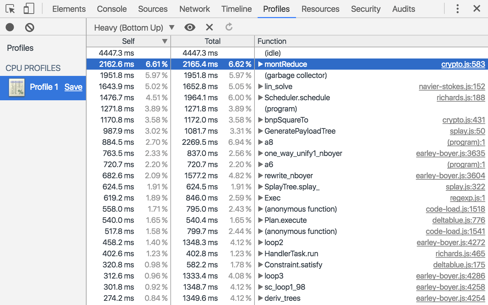

Chrome DevTools
Chrome DevTools adalah satu set alat untuk menulis dan men-debug web yang menjadi bawaan Google Chrome.
Gunakan DevTools untuk mengiterasikan, men-debug dan memprofilkan situs Anda.
Membuka Chrome DevTools
- Pilih More Tools > Developer Tools dari Menu Chrome.
- Klik-kanan pada elemen laman dan pilih Inspect
- Gunakan pintasan keyboard Ctrl+Shift+I(Windows) atau Cmd+Opt+I (Mac)
Menemukan Panel
Device Mode
 Gunakan Device Mode untuk membangun pengalaman web yang sangat responsif dan berorientasi
Gunakan Device Mode untuk membangun pengalaman web yang sangat responsif dan berorientasi
seluler.
- Device Mode
- Uji Tampilan yang Terlihat dan Khusus-Perangkat yang Responsif
- Mengemulasikan Sensor: Geolokasi & Akselerometer
Elements
 Gunakan panel Elements untuk mengulang pada layout dan desain situs Anda dengan
Gunakan panel Elements untuk mengulang pada layout dan desain situs Anda dengan memanipulasi DOM dan CSS secara bebas.
Console
 Gunakan Console untuk merekam informasi diagnostik ke dalam log selama development atau
Gunakan Console untuk merekam informasi diagnostik ke dalam log selama development atau
gunakan
sebagai shell untuk berinteraksi dengan JavaScript di laman.
Sources
 Debug JavaScript menggunakan breakpoint di panel Sources atau hubungkan file lokal melalui
Debug JavaScript menggunakan breakpoint di panel Sources atau hubungkan file lokal melalui
Workspaces untuk menggunakan editor langsung DevTools.
- Men-debug dengan Breakpoint
- Debug Kode yang Membingungkan
- Siapkan Persistensi dengan DevTools Workspace
Network
 Gunakan panel Network untuk mendapatkan wawasan mengenai sumber daya yang diminta dan diunduh serta
optimalkan kinerja pemuatan laman.
Gunakan panel Network untuk mendapatkan wawasan mengenai sumber daya yang diminta dan diunduh serta
optimalkan kinerja pemuatan laman.
Timeline
 Gunakan Timeline untuk meningkatkan kinerja waktu proses laman dengan merekam dan
Gunakan Timeline untuk meningkatkan kinerja waktu proses laman dengan merekam dan
mempelajari
beragam kejadian yang terjadi selama daur hidup situs.
Profiles

Gunakan panel Profiles jika Anda memerlukan lebih banyak informasi daripada yang disediakan
oleh
Timeline, misalnya untuk melacak kebocoran memori.
Application
 Gunakan panel Resources untuk memeriksa semua sumber daya yang telah dimuat, termasuk
Gunakan panel Resources untuk memeriksa semua sumber daya yang telah dimuat, termasuk
database
IndexedDB atau Web SQL, storage sesi dan lokal, cookie, Cache Aplikasi, gambar, font,
dan
stylesheet.
Security
 Gunakan panel Security untuk men-debug masalah materi campuran, masalah pada sertifikat, dan
Gunakan panel Security untuk men-debug masalah materi campuran, masalah pada sertifikat, dan
sebagainya.